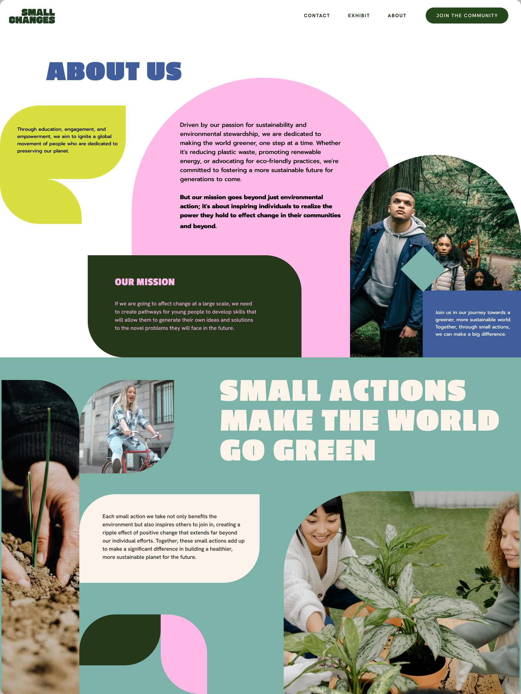

Overview
We intend to develop the concept of a climate roadmap exhibit for young adults to engage in an inspiring experience that helps lead them towards their first step in the journey of a sustainable future.
The Problem
How might we get individuals to attach themselves personally to climate change? Climate Action Experts are struggling to transition their audience from education to action. There are a variety of different groups in Vancouver and BC, that are working to impact changes in the area. What are the major barriers they face in their engagement with their audience?
Research
We conducted in person and zoom interviews. Asking University professors about their classroom engagement and on how they teach about the topic, and what the most important components of how they encourage people to address climate change.
Young adults faced by both huge amounts of data and mass amounts of misinformation in the media are confronting what some have labeled as “Climate Anxiety”. The climate experts that we have spoken with confirm this to be a truth, and we can help those effected by their uncertainty about the future through an approach informed by Behavioural Psychology.

Landing Page
I designed my landing page to be colourful with earth tones. It feels inviitng because of the shapes bubbly typefaces.
